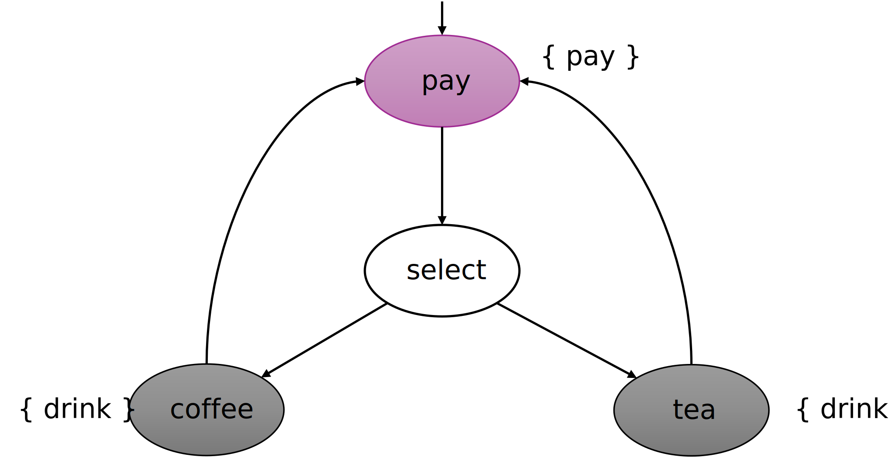
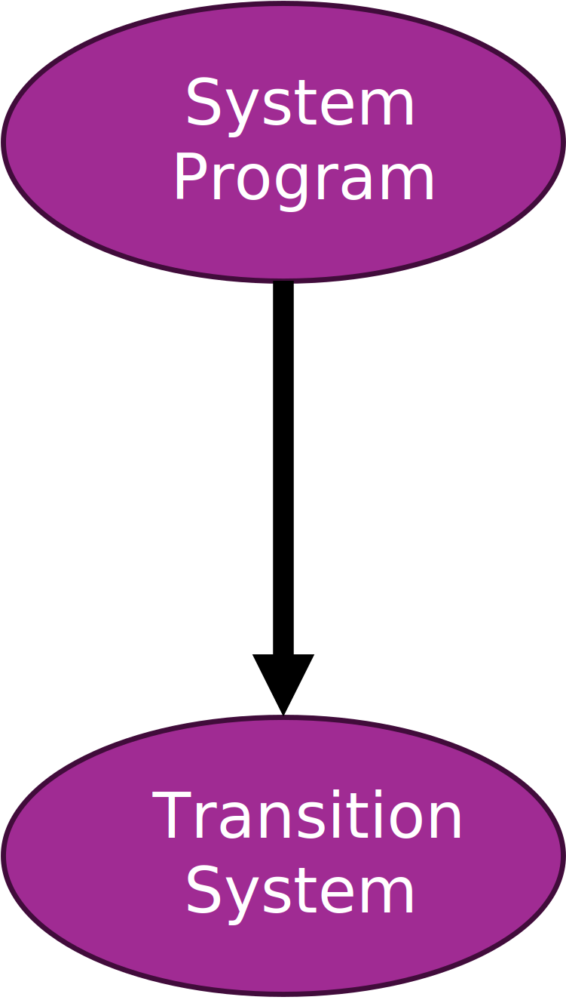
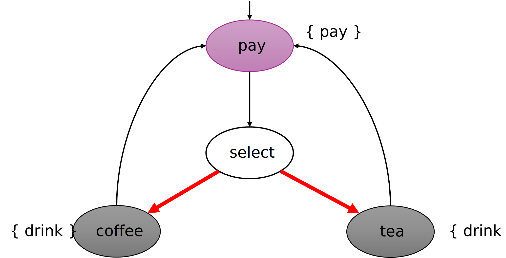
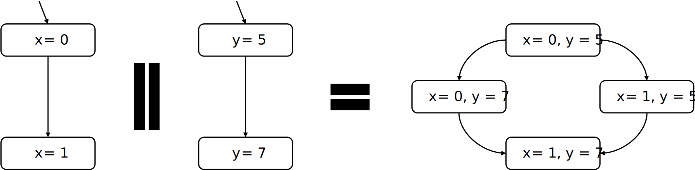
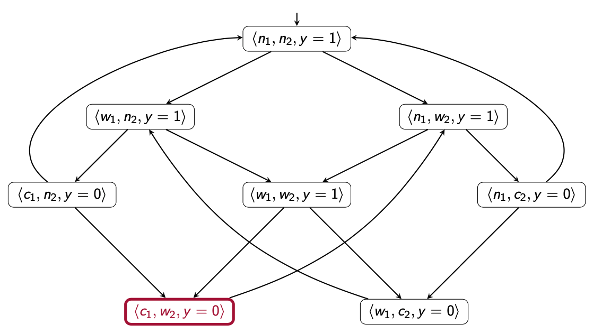
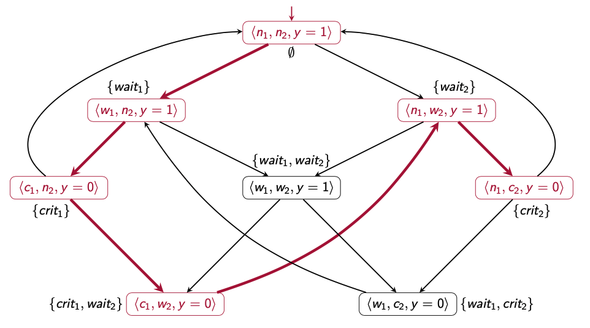
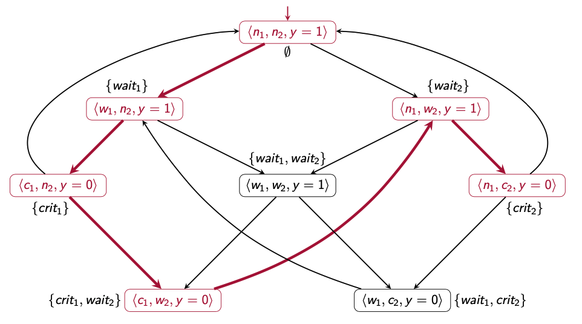

Conception et vérification
de systèmes critiques
Introduction aux méthodes formelles
2A Cursus Ingénieurs
- ST5 : Modélisation fonctionnelle et régulation
CentraleSupelec - Université Paris-Saclay - 2024/2025
CentraleSupelec - Université Paris-Saclay - 2024/2025

Dependability of Control Systems
-
A Control System is composed of 3 parts:
- Sensors
- Actuators
- Control Software that is critical in the Nuclear context!
Critical Software
For which a failure can be catastrophic:
For which a failure can be catastrophic:
- fatal or/and extremely costly
-
Some spectacular failures of critical softwares :
- Crash of Ariane 5
- LASCAD : Crash of London Ambulance CAD service
- Therac-25 : 7 deaths of cancer patients due to overdoses of radiation
Control Software Verification
- Take the software
- Determine what the software is supposed to do
- Prove that the software does what it is supposed to do
Software verification
Software verification checks/proves whether a system fulfills the qualitative requirements that have been identified in its specification
Software verification checks/proves whether a system fulfills the qualitative requirements that have been identified in its specification
- Imposed by Certification Organisations
- Several famous examples of abandoned projects, caused by impossibility of the verification step
- Ex : P20 portion of the french nuclear reactor protection
Verification vs Testing
- Testing is a common dynamic technique where the system is executed
-
Testing procedure:
- take an implementation
- stimulate it with certain inputs, i.e., the tests
- observe reaction and check whether this is “desired”
-
Testing drawbacks:
- number of possible behaviors is very large (or even infinite)
- unexplored behaviors may contain the fatal bug
- testing is biased towards the most probable scenarios
- Testing may prove the presence of errors, not their absence!
- Verification proves the absence of errors (or finds them)
On the need of Formal Methods
Verification has to be provable!
Definition of Formal Methods:
Formal Methods are the applied mathematics
for modeling, analyzing and verifying systems
Formal Methods are the applied mathematics
for modeling, analyzing and verifying systems
-
The formal form of the verification problem is $M \models^? \varphi$ where:
- $M$ is the formal representation of the system under observation
- $\varphi$ is the formal representation of the property to be verified
IAEA Safety Standards Series
Safety Guide of Nuclear Power Plants - IAEA
- Requirements and descriptions of designs should be stated formally $\dots$
- When formal languages are used to specify requirements or designs, theorem provers and model checkers may also aid in verifiability $\dots$
- When software requirements have been formally specified, it is possible to undertake formal code verification. However, formal verification generally requires considerable expertise, and therefore consulting competent analysts should be considered $\dots$
6 myths on Formal Methods
- The use of formal methods guarantees perfect software
- Nonsense, a formal specification is a model of the real world. Modeling may bring mistakes, omissions and ambiguities
-
The use of formal methods is restricted to proving software
- Before program proving, formal specification of a system forces a detailed analysis, early in the development
-
The use of formal methods is restricted to critical systems
- Industrial developments show that using formal methods reduce costs for all types of systems (of mass production)
6 myths on Formal Methods
- Only mathematicians can use formal methods
- Nonsense, the mathematics that are used are elementary
-
Formal methods increase development costs
- Unproved, costs are shifted to the beginning of the cycle
-
Formal methods are used only for small systems
- Several very large projects have used formal methods
Formal Verification of Sequential Software
Definition of Sequential Software
A sequence of instructions that terminates and the result is computed from initial data
A sequence of instructions that terminates and the result is computed from initial data
- Pre-Condition : property satisfied by the program initial data before the execution of the instructions
- Post-Condition : property satisfied by the program result and variables after the execution of the instructions
Verification of Sequential Software (Program Proof)
- Prove that if pre-condition is satisfied then post-condition is satisfied
- Find the most general pre-condition
Example
- Software : Array Sort
- Initial data : Array $T$ of size $N$
- Result : $~~~~~~~~~~~~~~~~~~~~~~~~~~~~~~~~~~~$ Sorted Array $T$ of size $N$
-
Post-Condition :
$~~~~~~~ \forall n,m \in [1..N],~n < m \Longrightarrow T[n] \leq T[m]$ -
Most general Pre-Condition :
True (nothing)
-
Post-Condition :
$~~~~~~~ \forall n,m \in [1..N],~n < m \Longrightarrow T[n] < T[m]$ -
Most general Pre-Condition :
$\forall n,m \in [1..N],~n \neq m \Longrightarrow T[n] \neq T[m]$
The Hoare Proof System
The Hoare Proof System provides for each type of instructions an Axiom/Rule
to find the most general pre-condition $\varphi$ (general form : {$\varphi$}$~P~${$\psi$} )
to find the most general pre-condition $\varphi$ (general form : {$\varphi$}$~P~${$\psi$} )
-
Assignment axiom : $~~~~~~~~~~~~~~$ {$\varphi[expr/x]$}$~x = expr~${$\varphi$}
- ex : {$y == 5$}$~x = y + 5~${$x == 10$}
- ex : {$x^2~<~4$}$~x = x * x~${$x~<~4$}
-
Loop axiom : {$\varphi$}$~$while($C$)$~P~${$\varphi \wedge \neg C$}
- if $\varphi$ is a loop invariant : {$\varphi \wedge C$}$~P~${$\varphi$}
-
Choice axiom : {$\varphi$}$~$if($C$)$~P1~$else$~P2~${$\psi$}
- if : {$\varphi \wedge C$}$~P1~${$\psi$}
- else : {$\varphi \wedge \neg C$}$~P2~${$\psi$}
Proof Example
pre-condition: $n \ge 0$ // initial data : $n$
$0 == 0 \wedge 0\le n$
$\sum_{k=0}^{0}{k} == 0 \wedge 0\le n$
i = 0;
$\sum_{k=0}^{i}{k} == 0 \wedge i\le n$
res = 0;
$\sum_{k=0}^{i}{k} == res \wedge i\le n$ // $\varphi$
while (i $<$ n) { // $C$
$(\sum_{k=0}^{i}{k} == res \wedge i\le n) \wedge i < n$ // $\varphi \wedge C$
$\sum_{k=0}^{i}{k} == res \wedge i < n$
$\sum_{k=0}^{i+1}{k} == res + i + 1 \wedge (i+1) \le n$
i = i + 1;
$\sum_{k=0}^{i}{k} == res + i \wedge i\le n$
res = res + i;
$\sum_{k=0}^{i}{k} == res \wedge i\le n$ // $\varphi$
}
$( \sum_{k=0}^{i}{k} == res \wedge i\le n ) \wedge i\ge n$ // $\varphi \wedge \neg C$
$\sum_{k=0}^{i}{k} == res \wedge i == n$
post-condition: $\sum_{k=0}^{n}{k} == res$ // result : $res$
First Order Logic
- Program Proof is based on the Formal System of the First Order Logic (FOL)
- pre-conditions, post-conditions, invariants, assertions $\ldots$
- FOL is the logic you are used to use in mathematics
- The syntax :
$t~~ ::= ~~c ~~|~~ x ~~ | ~~ f(t,\ldots,t) $
$\phi~~ ::= ~~ true ~~ | ~~a ~~ | ~~ t~ = ~t ~~|~~ P(t,\ldots,t) ~~ | ~~ \phi ~ \wedge ~ \phi ~~ | ~~ \neg~\phi ~~ |~~ \exists x.~\phi~$ - The semantics are as usual in mathematics
FOL Formal System
Definition
- A Formal System consists of a set of axioms and a set of inference rules (reasoning) that are combined to derive well formed formulas
- A derivation that leads to a wff $\mathcal{F}$ is called a proof of $\mathcal{F}$
Axioms
$$
\begin{aligned}
(ax1)~ & A_x(t) ~\Rightarrow~ \exists x. ~A\\
(ax2)~ & x=x\\
(ax3)~ & x=y \Rightarrow (A \Rightarrow A_x(y))\\
(ax4)~ & A \Rightarrow (B \Rightarrow A)\\
(ax5)~ & \neg \neg A \Rightarrow A\\
(ax6)~ & (A \Rightarrow (B \Rightarrow C)) \Rightarrow ((A \Rightarrow B)\Rightarrow(A \Rightarrow C))
\end{aligned}
$$
Rules
$$
\begin{aligned}
(r1)~ & A,~ A \Rightarrow B & \vdash & ~B \\
(r2)~ & A \Rightarrow B & \vdash & ~\exists x.A \Rightarrow B\\
\end{aligned}
$$
FOL Formal System
Soundness
A formal system is sound if each derived formula is valid i.e. semantically true.
A valid formula is called a theorem
Completeness
A formal system is complete if each valid formula could be derived,
i.e. it exists a proof leading to the theorem
A formal system is sound if each derived formula is valid i.e. semantically true.
A valid formula is called a theorem
Completeness
A formal system is complete if each valid formula could be derived,
i.e. it exists a proof leading to the theorem
- First Order Logic is sound and complete!
- An automatic program prover tries many possible derivations (infinite)
and after a time limit :- option 1/2 : it reaches the formula to prove $\to$ YES!
- option 2/2 : it doesn't (it needs some help) $\to$ Inconclusive
- First Order Logic is semi-decidable!
History of Formal Verification Methods
Before $\ldots$
- Software code was sequential
- Properties were expressed in First-Order Predicate Logic
- Theorem provers : partial/total correctness
- e.g. B Method
- Hardly automated : semi-decidable
After 80's
- Software is concurrent and reactive
- Properties are expressed in Temporal Logic
- Solving accurate properties like safety, liveness, fairness $\ldots$
- e.g. Model Checking
- Push-Button : decidable
Principle of Model-Checking

Principle of Model-Checking

Transition Systems
- model to describe the behaviour of systems
- digraphs where nodes represent states, and edges represent transitions
-
states :
- the current colour of a traffic light : red, green, orange.
- software : the current values of all program variables + the program counter
- hardware : the current value of the registers together with the values of the input bits
-
transitions : ("state change")
- a switch from one colour to another
- software : the execution of a program statement
- hardware : the change of the registers and output bits for a new input
Formal definition
-
A transition system $TS$ is a tuple $(S, \delta, I, AP, \mathcal{L})$ where
- $S$ is a set of states
- $\delta \subseteq S \times S$ is a transition relation
Notation: $s \rightarrow s'$ instead of $(s,s') \in \delta$ - $I \subseteq S$ is a set of initial states
- $AP$ is a set of Atomic Propositions
- $\mathcal{L} : S \longrightarrow 2^{AP}$ is a Labeling function
Example

- States : $S = \{pay, select, tea, coffee\}$
- Initial states : $I= \{pay\}$
- Atomic Propositions, Labeling function :
- suppose $AP = S$, $\mathcal{L}(s)=\{s\}$
-
suppose $AP = \{pay, drink\}$, $~~~~~~~~\mathcal{L}(tea)=\mathcal{L}(coffee)=\{drink\}$
$\mathcal{L}(pay)=\{pay\}$, $~~~\mathcal{L}(select) = \emptyset$
From programming languages
to transition systems

- Transition systems are an elementary modeling language
- describe all the states that the system may reach
- describe the behavior of the system (transitions)
- Even a basic system may have thousands of states!
int i=0; while(i<1000) i++;- modeling could be tedious !
- What if the transition system is automatically generated from the system's program ?
- modeling would be automatic !
- many tools exist from C, Java $\ldots$ to TS
Determinism and Nondeterminism
- Let $TS = (S, \delta, I, AP, \mathcal{L})$ be a transition system, $TS$ is deterministic
- iff $~~~\forall~s,s'_1,s'_2 \in S,$ $s \rightarrow s'_1, s \rightarrow s'_2 \in \delta \Rightarrow s'_1 = s'_2$
- iff $~~~\forall~s \in S,$ $\#(\delta(s)) \le 1$

Sources of Nondeterminism
- Incomplete information on the system environment
- User selection
- Triggered events
Interleaving of concurrent systems
- the system is composed by many concurrent components
- one transition system for modeling one component behavior
- e.g. threading, distributed algorithms and communication protocols
Interleaving principle
- Actions of independent components are interleaved
- a single processor is available
- on which each component executes for a quantum of time
- No assumptions are made on the order of executions
- possible orders for non-terminating independent components
$Loop(P) \parallel Loop(Q)$: $$ \begin{aligned} P~~ Q~~ P~~ Q~~ P~~ Q~~ P~~ Q~~ P~~ Q \ldots\\ P~~ P~~ Q~~ P~~ P~~ Q~~ P~~ P~~ Q~~ P \ldots\\ P~~ Q~~ P~~ P~~ Q~~ P~~ P~~ P~~ Q~~ P \ldots\\ \end{aligned} $$
- possible orders for non-terminating independent components
main source of nondeterminism that can be avoided by adding a scheduler with a particular strategy
Interleaving example

- Justification for interleaving:
- the effect of concurrently executed independent actions equals the effect
when they are successively executed in arbitrary order
- the effect of concurrently executed independent actions equals the effect
Interleaving $~~~~TS_1 \parallel TS_2$
Formal definition
Let $~~TS_i = (S_i, \delta_i, I_i, AP_i, \mathcal{L}_i), i=1,2~~$ be two transition systems.
The Interleaving Product (Asynchronous product) is the transition system:
$$TS_1 \parallel TS_2 = (S_1 \times S_2, \delta, I_1 \times I_2, AP_1 \cup AP_2, \mathcal{L}) $$
where $\delta$ verifies:
$$
\frac{s_1 \longrightarrow s'_1}
{\langle s_1,s_2 \rangle \longrightarrow \langle s'_1,s_2\rangle}
~~~and~~~
\frac{s_2 \longrightarrow s'_2}
{\langle s_1, s_2 \rangle \longrightarrow \langle s_1,s'_2\rangle}
$$
and $\mathcal{L}$ verifies :
$$
\mathcal{L}(\langle s_1,s_2\rangle) = \mathcal{L}_1(s_1) \cup \mathcal{L}_2(s_2)
$$
Semaphore-based mutual exclusion

$y=0$ means “lock is currently possessed”; $y=1$ means “lock is free”
Interleaving product

Typical source of state explosion
suppose there were 3 concurrent components
suppose there were 3 concurrent components
Paths and Reachable states
- An infinite path fragment $\pi$ is an infinite state sequence:
$\pi = s_0 s_1 s_2\ldots~$ such that $\forall i > 0, s_i \longrightarrow s_{i+1} \in \delta$ - $Paths(s)$ is the set of infinite path fragments $\pi$ with $first(\pi) = s$
- $Paths(TS) =\underset{s \in I}{\cup} Paths(s)$ is the set of initial path fragments
- A state $s \in S$ is called reachable in $TS$ if there exists an initial path $\pi$ fragment such that $$ \pi = s_0 s_1 \ldots s_{n-1} (s_n = s) s_{n+1} \ldots \in Paths(TS) $$
- $Reach(TS)$ denotes the set of all reachable states in $TS$
Back to our example

$Paths(\langle c_1, w_2, y=0\rangle)$ ?, $Paths(TS)$ ?, $Reach(TS)$ ?
Traces
- States are observable through their atomic propositions
-
Traces only focus on the (set of) atomic propositions that are valid
along the execution (path) -
The trace of the path $\pi = s_0 s_1 s_2\ldots$ $\in S^{\omega}$ with $\mathcal{L} : S \longrightarrow 2^{AP}$
- $trace(\pi) = \mathcal{L}(s_0) \mathcal{L}(s_1) \mathcal{L}(s_2)\ldots$ $\in (2^{AP})^{\omega}$
- Traces are infinite words over the alphabet $2^{AP}$
-
$trace(\Pi) = \{trace(\pi) | \pi \in \Pi\}$, $Traces(s) = trace(Paths(s))$
$~~~~~~~~~~~~~~~~~~$ and $ ~~~Traces(TS) = \underset{s \in I}{\cup} Traces(s)$
Back to our example
Let $AP = \{wait_1, crit_1, wait_2, crit_2\}$ 

$Trace(\pi\dots) = \emptyset \{wait_1\} \{crit_1\} \{crit_1,wait_2\} \{wait_2\} \{crit_2\}\dots$